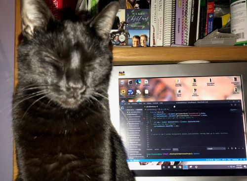

My mom died suddenly in November of 2017. I am honored and privileged to have inherited what she treasured the most at that time in her life, her cat Scout. I will often refer to him as my “little brother” since he was my mother’s child. Scout was an adult cat when he presented himself on her doorstep so we don't know how old he is but he is getting up there in age.
Sweetie (aka “Meanness”)
Sweetie has the classic grumpy cat look of Persians and seldom lives up to her name. I had reservations about taking her in because she is declawed and did not know how well she could handle herself around the other cats. She makes up for her lack of claws with pure attitude. The other cats simply don’t mess with her.

Gus
Gus was adopted from the Aiken SPCA in 2017. They had named him "Grumpy" but I (we) changed his name to Gus. Gus is totally not a lap boy. Friendly but I think I can count on one hand the number of times he has sat in my lap! But we adore him anyway. He is the one that opens the back door if we do not lock the deadbolt. I got up one morning, wee hours as always, let one of the dogs out and forgot to relock the door after letting the dog back in. I woke up a few hours later, the house was freezing. Gus had opened the door but where was Gus? Gus was curled up in his box on a heated mat. Thanks man!!!!